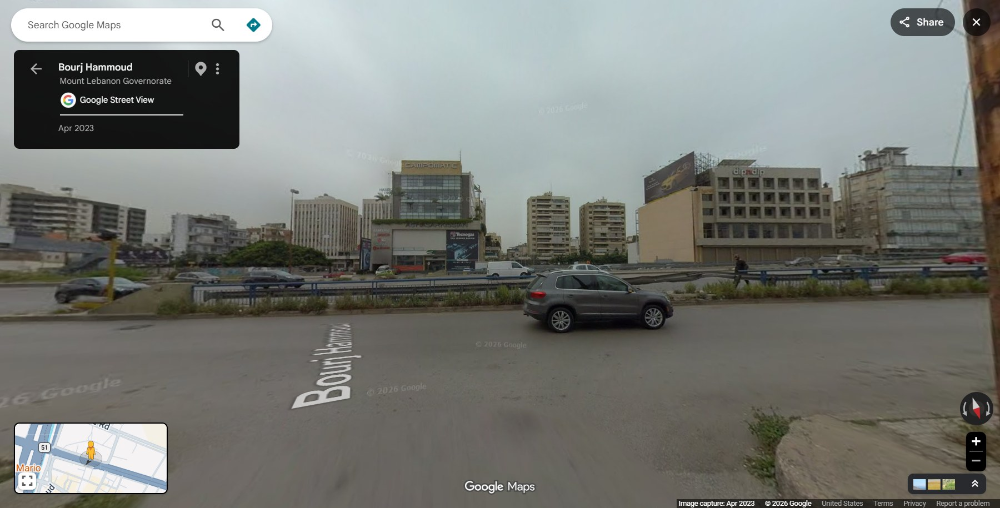
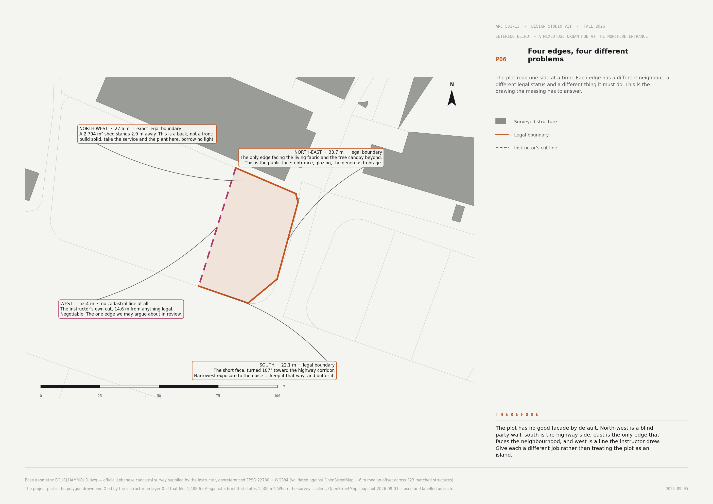

01 / 09
Entering Beirut · Bourj Hammoud
NestingThe sheltered heart
An asymmetrical, vertical nest
Screen evidence · corridor edge · Apr 2023
An asymmetrical, vertical nest
Screen evidence · corridor edge · Apr 2023


The nest opens here.
The void moves.
The frame stays.
Hard outside.
Shared inside.
Green above.
East forecourt → loggia → forum → stair → garden
Protection is selective.
The nest is never a bunker.
Because the plot has no sheltered end, robust functions form protective outer layers, a public heart opens east, and the shared space rises into an ecological upper nest.
Protect → open → gather → rise